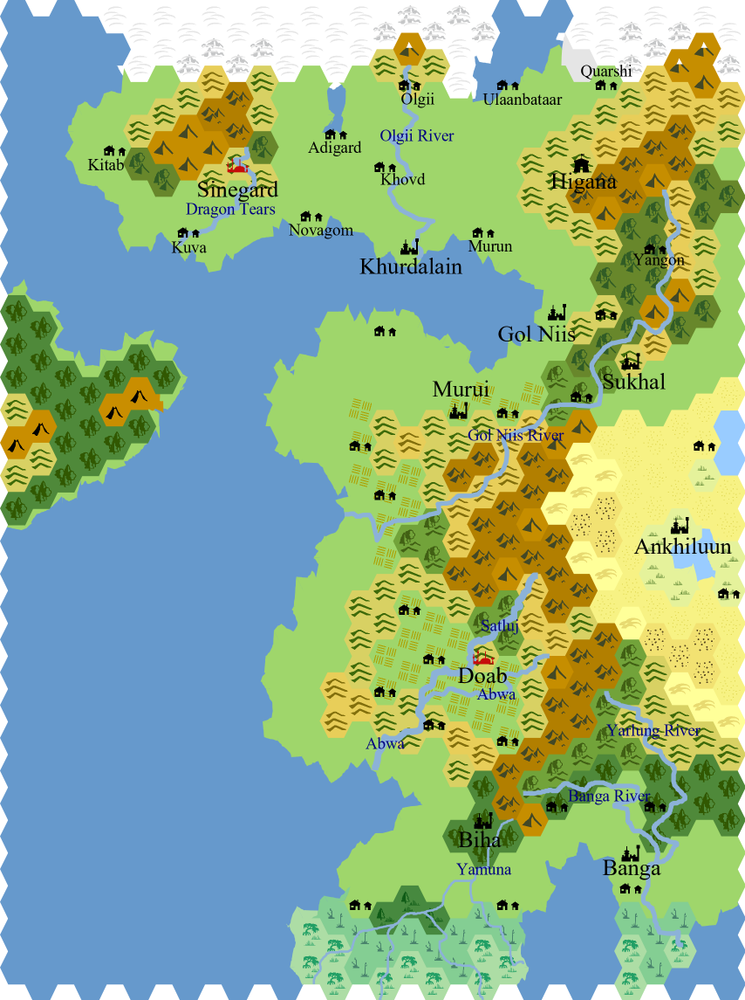

A primer for players of my game

A large country surrounded by the cold hinterlands on the north, a sea on the west. Before Nikan was an empire, it was a collection of small monastic peoples. Then a millennia ago the Red Emporer slowly conquered half the continent including Nikan. He established a common language, built roads and generally introduced modern technology into the region. This resulted in the homogenization of the region. The current Nikaran Empire consists of 12 provinces each ruled by a warlord. Some provinces are vassals to other provinces so the actual number of political linchpins is usually lower than 12. Some warlords are kings by name only and have no actual power. Regardless, each province answers to the current Empress of Nikan, Su Daji. Empress Su Daji has a tenuous hold on all the rivalling warlords. There are pockets of regions that see no administrative control by the crown due to various factors. The two biggest reasons being, one, not enough man power and two, the regions are too remote and hold very little natural resources to exploit.
Most Nikarans practice rituals and pay lip service to the various local gods of their respective province. Temples usually house statues and symbols of most of the pantheon. Smaller temples usually house only the local god and the trio of Turtle (the creator), the Dragon (the preserver) and the Phoenix (the destroyer). The gods manifest their power through avatars and saints. Many modern scholars believe that the gods are just sources of energy to be used and have no will of their own. The source of power of the gods is magic, and many great warriors of the past and present bypassed gods and directly channeled magic, reducing the reliance on gods for the modern people. Both Magic and divinity is taught exclusively to the ruling class and their agents only, although there are some who independently practice it.
For the purpose of creating characters with any ancestry and class. All ancestories can be found on the mainland of Nikan. They may vary in ratios in the different provinces due to ancestral ties and climates. Only Memnoks and Time Raiders are recent additions to Nikan and can be considered "forgein" as they come form the far western nations like Adrun. The skills represented by all the nine core classes of Draw Steel are practiced to some degree in each province of Nikan. Further details may be found in the Province section of this primer.
Altan, Ai, Akane, Aina, Akimitsu, Ankhbayar, Baatar, Batu, Chingis, Chiharu, Chizuru, Bolormaa, Daichi, Eiji, Enkh, Erdem, Goro, Jargal, Maral, Khulan, Noboru, Oyuun, Sarantuya, Solongo, Zaya
The Summer capital of Nikan, Sinegard, resides in the Dragon province. The city of Sinegard also houses the Nikan Empire's most prestigous military training academy, The Royal Sinegard Academy. The students of this academy go on to become officers, diplomats and generals in the Nikaran Military. To some it is an escape from poverty, to others a means to gain political leverage and to some a matter of family pride. Everyone is equal once they enter the grounds of Sinegard Academy, in theory. Realistically, social divisions and favouratism still exist due to there being a ruling and serf class in actual Nikaran society.
The Ram province along with the Horse province form the southern-Hinterlands. Vast open platues with sparse resources and a nomadic horse and Yak herding population. The region is served by many small cold streams of water that emerge from the moutains in the northern Hinterlands. Khurdalain is a major port city that serves as an urban center for both the Ram and Horse Provinces. Although the Ram Warlord holds complete political and economical control of Khurdalain. The Horse warlord is a vassal of the Snake merchant Prince and a solid pawn in the efforts of the Snake province to gain control of the wool and fishing industry in Khurdalain.
Although Khurdalain is shared by the two provinces of Ram and Horse, it is mainly a Ram province city. The warlord of Horse Province prefers not to have urban centers and wishes to maintain the pre-Red Emporer traditions of his people. Scholars do argue that any tradition preserved would have been heavily modified by the one thousand year control of the Nikaran Empire after the Red Emporer but the Horse warlord chooses to dismiss such claims. Currently this independence comes at the cost of paying tribute to the Snake Merchant Prince. The people of the Horse province are a collection of expert riders, hunters and spiritualists.
This province is covered in swamps in the south due to many small rivulets that drain into the sea forming a delta. The north has a very dense coverage of forests near the foothills. There are smaller fishing settlements near the border of the swamp and the coast. Quite a few engineers come from the rat province, especially shipwrights. The region also boasts originating fresh water fish farms and hardy sailors. The nikan navy is quite weak when compared to other neighbouring nations but most of it is concentrated in this province.
The Federation of Mugen used to be a Nikan colony during the era of the Red Emperor. But soon after the death of the Red Emperor, its provinces fell into a power struggle allowing the small island nation of Mugen to achieve independence. After independence the Federation of Mugen quickly industrialised under a pragmatic ruler and became highly militaristic. The growing population and low landmass made Mugen eye the former Nikan Empire colonists as a fertile place to capture and expand into. They set up a trading outpost on the coast of Nikan in the Snake province in order to get a foothold in the mainland. Eventually growing bold enough to field squads that frequently skirmished with the less trained and organized soldiers of the Nikan Empire. This finally culminated in a full blown war.
Grew up a poor sailor. Once got shipwrecked and guided by visions found these strange powers within himself. Attempted the Keju and entered the academy so as to not squander these new gifts he has developed. For who knows, he might lose them as suddenly he gained them.
The favourite son of the Snake Merchant Prince family, sent to Sinegard because where else would he go. Only the best academy for the favoured son.
Always playing second fiddle to the first son of the Hare warlord. He comes from a now broken noble house of the Hare province. Currently working as a friend and servant to the warlord's son. To regain his place among the aristocrats and former glory of his house he is willing to do anything.
Child of a successful restaurant business in the snake province. But never satisfied with their station in life and always jealous of the Rich Merchant prince and their power. They aspire for more and to see more, thus deciding to enter the Sinegard Royal Academy.
The young naive nephew of the Rooster Warlord. Gifted in battle , now a tool for his uncle's ambitions is thrust on the national Nikaran political stage. He enters the academy with ideas of glory and grandeur for his province and uncle.